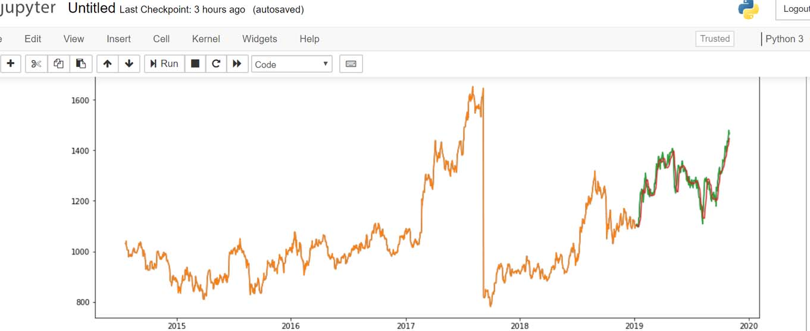

|
Table of Contents
|
LSTM : परिचय
श्रृङ्खला या सिक्वेन्स में डैटा हो तो उसमें भावी डैटा की भविष्यवाणी करने में LSTM न्यूरल नेटवर्कों की अत्यधिक उपयोगिता पायी गयी है，जैसे कि कम्पनियों द्वारा बिक्री，स्टॉक बाजार के मूल्य，OCR，वॉइस रिकॉगनिशन，अनुवाद，फोन पर टाइप करते समय अगले सम्भावित शब्द का पूर्वानुमान，आदि । अनावश्यक डैटा को फॉर्गेट गेट द्वारा निकालकर आवश्यक डैटा की लम्बी श्रृङ्खला को याद रखने की क्षमता के कारण पैटर्नों की पहचान करने में LSTM की उपयोगिता ‘फीड फॉरवर्ड’ या ‘रिकरेण्ट’ न्यूरल नेटवर्कों से बेहतर है ।
फीड फॉरवर्ड नेटवर्क में पिछले डैटा की सूचना नहीं रहती क्योंकि वेट अपडेट करने की विधि में पिछले अवयवों का प्रभाव धीरे−धीरे घटते हुए लुप्त हो जाता है जिसे Vanishing Gradient कहते हैं । RNN में कुछ दूरी तक पिछले अवयवों की स्मृति बचाने का प्रावधान किया गया किन्तु दीर्घ श्रृङ्खला में RNN स्मृतिहीन बन जाता है । RNN की सँयोजना में इसी कमी को देर करके LSTM की संकल्पना की गयी । LSTM में अनावश्यक सूचनाओं को फॉर्गेट द्वार से निकाल दिया जाता है ताकि आवश्यक सूचना के लिये पथ प्रशस्त हो；इस प्रकार दूर तक की श्रृङ्खला से सम्बन्ध बना रहता है ।
LSTM के दुरुपयोग का उदाहरण
मधुमेह रोगियों के जिस डैटाबेस पर MLP न्यूरल नेटवर्क की जो प्रोग्रामिंग दिखायी गयी थी उसमें एपोक १५००० करने पर भी एक्यूरेसी ८६% से अधिक नहीं जाती । परन्तु निम्न LSTM कोड रन करेंगे तो ४० एपोक से पहले ही एक्यूरेसी १००% हो जायगी । मशीन लर्निंग में एक्यूरेसी कभी भी १००% नहीं होनी चाहिये । इस त्रुटि का कारण यह है कि LSTM पिछले सैम्पलों में से ट्रेनिंग में उपयोगी आँकड़ों को याद रखता है और ट्रेनिंग में अनावश्यक आँकड़ों को भुला देता है । इसका नेटवर्क का नाम ही है लांग शॉर्ट टर्म मेमोरी । मधुमेह डैटाबेस पर LSTM का प्रयोग करने से पिछले रोगियों के आँकड़े आगे वाले रोगियों के आँकड़ों को प्रभावित करते हैं，जिस कारण सभी रोगियों के आँकड़े गलत हो जाते हैं और पिछले रोगी की नेटवर्क एक्यूरेसी अगले रोगी की एक्यूरेसी में जुड़ती चली जाती है जिस कारण शीघ्र ही एक्यूरेसी बहुत बढ़ जाती है । ऐसे डैटाबेस में LSTM का प्रयोग करना ही नहीं चाहिये जिसमें हर सैम्पल पूर्णतया स्वतन्त्र हो । उदाहरणार्थ，मधुमेह डैटाबेस में किसी रोगी के निम्न आँकड़े हैं —
१⋅Number of times pregnant
२⋅Plasma glucose concentration a 2 hours in an oral glucose tolerance test
३⋅Diastolic blood pressure (mm Hg)
४⋅Triceps skin fold thickness (mm)
५⋅2-Hour serum insulin (mu U/ml)
६⋅Body mass index (weight in kg/(height in m)^2)
७⋅Diabetes pedigree function
८⋅Age (years)
इनमें से ऐसा कोई आँकड़ा नहीं है जिसका सम्बन्ध किसी अन्य रोगी के किसी आँकड़े से कोई सम्बन्ध हो ।
फिर भी यदि इसी किस्म के फॉर्मेट में कोई डैटाबेस हो जिसमें सैम्पलों का आगे−पीछे के अन्य सैम्पलों से सम्बन्ध हो तो LSTM प्रोग्रामिंग सीखने के लिये निम्न उदाहरण प्रस्तुत है，हालाँकि जिस मधुमेह डैटाबेस पर निम्न उदाहरण है उसका LSTM हेतु प्रयोग करना अनुचित है । LSTM का उचित प्रयोग अगले अनुच्छेद में है । निम्न कोड अनाकोण्डा प्रॉम्प्ट पर पायथन में चलायें ।
▃▃▃▃▃▃▃▃▃▃▃▃▃▃▃▃▃▃▃▃▃▃▃▃▃▃▃▃▃
from tensorflow.keras.models import Sequential
from tensorflow.keras.layers import Dense, Dropout
from tensorflow.keras import optimizers
import tensorflow as tf
tf.compat.v1.get_default_graph
from tensorflow.keras.models import load_model
from tensorflow.keras.constraints import min_max_norm
import time
from tensorflow.keras.layers import Embedding
from tensorflow.keras.layers import LSTM
from numpy import loadtxt
max_features = 1024
dataset = loadtxt('Z:\Z_GPU\PythonPrograms\pima-indians-diabetes.csv', delimiter=',')
X = dataset[:,0:8]
y = dataset[:,8]
model = Sequential()
model.add(Embedding(max_features, output_dim=256))
model.add(LSTM(128))
model.add(Dropout(0.5))
model.add(Dense(1, activation='sigmoid'))
model.compile(loss='binary_crossentropy', optimizer='rmsprop', metrics=['accuracy'])
start = time.time()
model.fit(X, y, batch_size=10, epochs=10)
end = time.time()
score = model.evaluate(X, y, batch_size=10)
print("%s: %.2f%%" % (model.metrics_names[1], score[1]*100))
print(end - start)
▃▃▃▃▃▃▃▃▃▃▃▃▃▃▃▃▃▃▃▃▃▃▃▃▃▃▃▃▃
LSTM का सही प्रयोग : स्टॉक मूल्य की भविष्यवाणी
वित्तीय डैटासेट डाउनलोड करने का तरीका
गूगल सर्च में यह टाइन करें —
qualdl reliance industries limited
तब जो लिंक सबसे पहले मिलेगा वह है —
https://www.quandl.com/data/TC1/RELIANCE-Reliance-Industries-Ltd-Adjusted-Pricing
उसमें “डाउनलोड” बटन क्लिक करके CSV फॉर्मेट चुनकर डैटासेट डाउनलोड कर लें । माइक्रोसॉफ्ट−एक्सेल या नोटपैड में मूल फाइल खोलकर उसमें से जिस कालखण्ड पर आप मशीन लर्निंग प्रोग्राम बनाना चाहते हैं केवल उतने अंश को नये नाम से सेव कर लें और उस सेव्ड फाइल का पथ और नाम निम्न प्रोग्राम में डाल दें । याहू फायनैन्स पर भी बहुत डैटा मिलेंगे किन्तु उसका फार्मेट अलग है जिसके लिये प्रोग्राम का डैटा इनपुट कोडिंग बदलना पड़ेगा ।
उस डैटासेट में कुल कितने डैटा−सैम्पल हैं और प्रोग्राम में उस हिसाब से ट्रेनिंग और टेस्ट डैटासेटों की संख्या कैसे निर्धारित करें इसके लिये निम्न प्रोग्राम की जाँच सावधानीपूर्वक करें ।
अनाकोण्डा−प्रॉम्प्ट में यह प्रोग्राम एक−एक पङ्क्ति लिखकर एण्टर दबाते हुए धीरे−धीरे आगे बढ़ेंगे तो प्रोग्राम की बारीकियाँ समझ में आयेंगी，और जहाँ कठिनाई हो उस शब्द का अर्थ गूगल−सर्च द्वारा ढूँढें ।
Jupyter Notebook में LSTM : सीपीयू या जीपीयू मोड
https://www.quandl.com/data/BSE/BOM500325-RELIANCE-INDUSTRIES-LTD-EOD-Prices वेबसाइट से “रिलायन्स इण्डस्ट्रीज लिमिटेड” का डैटाबेस डाउनलोड करके उसे माइक्रोसॉफ्ट Excel में खोलें और फिर उसमें से अन्तिम १३०० दिनों के आँकड़ों को RIL2.csv नाम के फाइल में सेव कर लें । मैंने जो सेव किया उसका अन्तिम दिन है ३१ अक्टूबर २०१९ ईस्वी । याहू फाइनैन्स से भी ऐसे आँकड़े डाउनलोड किये जा सकते हैं किन्तु उनकी फॉर्मेट भिन्न होती है जो निम्न प्रोग्राम में कार्य नहीं करेगा，डैटाफ्रेम बदलना पड़ेगा ।
https://www.quandl.com वेबसाइट से संसार की सभी बड़ी कम्पनियों के आँकड़े डाउनलोड कर सकते हैं और रिलायन्स के बदले किसी अन्य कम्पनी के आँकड़े डालकर निम्न प्रोग्राम बना सकते हैं । किन्तु डैटाबेस के rows की संख्या प्रोग्राम के डैटाफ्रेम के अनुरूप रहना चाहिये，Date कॉलम का होना आवश्यक है और उसका फॉर्मेट निम्न प्रोग्राम में दर्ज होना चाहिये — '%d-%m-%Y' जो किसी किसी मामले में '%Y-%m-d%' होता है；तथा डैटाबेस में Close नाम का कॉलम होना चाहिये जो ट्रेडिंग बन्द होने के समय का स्टॉक मूल्य है ।
ग्राफ प्लॉट करने के कारण Jupyter Notebook का प्रयोग किया गया है ।
अब Jupyter Notebook खोलकर ऊपर दाहिनी ओर “न्यू” बटन दबाकर नया खाली फाइल खोलें और उसमें निम्न कोड पेस्ट कर दें । RIL2.csv का जो पथ निम्न फाइल में है उसे बदलकर अपने कम्प्यूटर में RIL2.csv फाइल का सही पथ टाइप कर दें । पूरे कोड में और कुछ न बदलें और प्रोग्राम को रन करें，नीचे जो स्क्रीनशॉट संलग्न है वैसा ही ग्राफ कुछ काल में मिलेगा जिसका अधिकांश ग्यारह सौ दिनों का डैटा नारङ्गी रङ्ग का ग्राफ है जबकि दाहिनी ओर का हिस्सा भविष्यवाणी है । भविष्यवाणी वाला ग्राफ लाल है，उससे सटा हरे रङ्ग का ग्राफ वास्तविक डैटा है किन्तु उसका प्रयोग मॉडल की ट्रेनिंग के लिये नहीं किया गया है ताकि वास्तविक डैटा का प्रभाव भविष्यवाणी पर न पड़े ।
Jupyter Notebook में इस प्रोग्राम ने कभी ७६ तो कभी ७७ सेकण्ड समय लिया，किन्तु जीपीयू−मोड वाले Jupyter Notebook में पाँच गुणा कम समय लगा । बड़े प्रोग्रामों में तो इससे भी बहुत अधिक समय की बचत होती है ।
जुपिटर नोटबुक हो या अनाकोण्डा या पाइचार्म，इन दो पङ्क्तियों के आरम्भ में चार स्पेस (▭▭▭▭)होना चाहिये वरना प्रोग्राम कार्य नहीं करेगा क्योंकि ये एक लूप के अङ्ग हैं —
▭▭▭▭new_data['Date'][i] = data['Date'][i]
▭▭▭▭new_data['Close'][i] = data['Close'][i]
लूप की इन दो पङ्क्तियों के बाद एक रिक्त पङ्क्ति होनी चाहिये वरना बाद वाली पङ्क्ति भी लूप का अङ्ग बन जायगी । यह सावधानी सभी लूपों के साथ बरतनी चाहिये । लूप की पहचान यह है कि उसका आरम्भ for से है ।
nm = 1100 तथा nm2 = 100 को ऊपर से हटाकर नीचे ला सकते हैं किन्तु निम्न पङ्क्ति से पहले ही उनको रखना पड़ेगा —
train = dataset[0:nm,:]
इन दो पङ्क्तियों के आरम्भ में भी चार स्पेस होना चाहिये और बाद में एक रिक्त पङ्क्ति जोड़ दें —
▭▭▭▭x_train.append(scaled_data[i-nm2:i,0])
▭▭▭▭y_train.append(scaled_data[i,0])
model.add(LSTM(units=50, return_sequences=True, input_shape=(x_train.shape[1],1))) पङ्क्ति को ऐसे भी लिख सकते हैं —
model.add(LSTM(units=50,
▭▭▭▭▭▭▭▭▭▭▭▭return_sequences=True,
▭▭▭▭▭▭▭▭▭▭▭▭input_shape=(x_train.shape[1],1)))
किन्तु पहली पङ्क्ति के पश्चात जितने भी पैरामीटर हैं उनकी पङ्क्ति से पहले लगभग पन्द्रह स्पेस डाल दें और अन्तिम पङ्क्ति के पश्चात एक पङ्क्ति रिक्त हो । model.compile तथा model.fit के साथ भी ऐसा कर सकते हैं，तब हरेक पैरामीटर स्पष्ट दिखेगा ।
model.compile में optimizer='adam' के स्थान पर optimizer=adm लिखेंगे और इस पङ्क्ति से पहले निम्न पङ्क्ति लिखेंगे तो ऑप्टीमाइजर के लक्षणों को बदल−बदल कर प्रयोग करने की छूट मिलेगी —
adm = optimizers.Adam(lr=0.001, decay=1e-7, beta_1=0.9, beta_2=0.999, epsilon=1e-8, amsgrad=0)
किन्तु ऑप्टीमाइजर के साथ ऐसा तभी कर सकेंगे जब प्रोग्राम के आरम्भिक इम्पोर्ट विभाग में यह पङ्क्ति हो —
from tensorflow.keras import optimizers
model.fit( को history = model.fit( भी लिख सकते हैं ।
X_test.append(inputs[i-nm2:i,0]) पङ्क्ति भी लूप का अङ्ग है，अतः इस पङ्क्ति के आरम्भ में चार स्पेस जोड़ दें और अन्तिम पङ्क्ति के पश्चात एक पङ्क्ति रिक्त हो ।
प्रोग्राम के परिणाम की औसत त्रुटि का रूट मीन स्क्वायर है rms ॥
tm का अर्थ है model.fit( अर्थात् ट्रेनिंग में कितने सेकण्ड लगे ।
उपरोक्त सारे परिवर्तन जुपिटर−नोटबुक ही नहीं बल्कि पायचार्म और अनाकोण्डा−प्रॉम्प्ट आदि समस्त पायथन इण्टरफेसों के लिये हैं ।
▃▃▃▃▃▃▃▃▃▃▃▃▃▃▃▃▃▃▃▃▃▃▃▃▃▃▃▃▃
#import packages
import pandas as pd
import numpy as np
#importing required libraries
from sklearn.preprocessing import MinMaxScaler
from tensorflow.keras.models import Sequential
from tensorflow.keras.layers import Dense, Dropout, LSTM
import tensorflow as tf
tf.compat.v1.get_default_graph
import time
#to plot within notebook
import matplotlib.pyplot as plt
%matplotlib inline
#setting figure size
from matplotlib.pylab import rcParams
rcParams['figure.figsize'] = 20,8
#for normalizing data
from sklearn.preprocessing import MinMaxScaler
scaler = MinMaxScaler(feature_range=(0, 1))
#read the file
df = pd.read_csv("Z:\Z_GPU\_EquityDatasets\RIL2.csv")
#print the head
df.head()
nm = 1100
nm2 = 100
#setting index as date
df['Date'] = pd.to_datetime(df.Date,format='%d-%m-%Y')
df.index = df['Date']
#plot
plt.figure(figsize=(16,6))
plt.plot(df['Close'], label='Close Price history')
#creating dataframe
data = df.sort_index(ascending=True, axis=0)
new_data = pd.DataFrame(index=range(0,len(df)),columns=['Date', 'Close'])
for i in range(0,len(data)):
▭▭▭▭new_data['Date'][i] = data['Date'][i]
▭▭▭▭new_data['Close'][i] = data['Close'][i]
#setting index
new_data.index = new_data.Date
new_data.drop('Date', axis=1, inplace=True)
#creating train and test sets
dataset = new_data.values
train = dataset[0:nm,:]
valid = dataset[nm:,:]
#converting dataset into x_train and y_train
scaler = MinMaxScaler(feature_range=(0, 1))
scaled_data = scaler.fit_transform(dataset)
x_train, y_train = [], []
for i in range(nm2,len(train)):
▭▭▭▭x_train.append(scaled_data[i-nm2:i,0])
▭▭▭▭y_train.append(scaled_data[i,0])
x_train, y_train = np.array(x_train), np.array(y_train)
x_train = np.reshape(x_train, (x_train.shape[0],x_train.shape[1],1))
## create and fit the LSTM network
model = Sequential()
model.add(LSTM(units=50, return_sequences=True, input_shape=(x_train.shape[1],1)))
model.add(LSTM(units=50))
model.add(Dense(1))
model.compile(loss='mean_squared_error', optimizer='adam')
start = time.time()
model.fit(x_train, y_train, epochs=1, batch_size=1, verbose=2)
end = time.time()
#predicting new values, using past 100 from the train data
inputs = new_data[len(new_data) - len(valid) - nm2:].values
inputs = inputs.reshape(-1,1)
inputs = scaler.transform(inputs)
X_test = []
for i in range(nm2,inputs.shape[0]):
▭▭▭▭X_test.append(inputs[i-nm2:i,0])
X_test = np.array(X_test)
X_test = np.reshape(X_test, (X_test.shape[0],X_test.shape[1],1))
closing_price = model.predict(X_test)
closing_price = scaler.inverse_transform(closing_price)
rms=np.sqrt(np.mean(np.power((valid-closing_price),2)))
#for plotting
train = new_data[:nm]
valid = new_data[nm:]
valid['Predictions'] = closing_price
plt.plot(train['Close'])
plt.plot(valid[['Close','Predictions']])
tm=(end - start)
tm
rms
▃▃▃▃▃▃▃▃▃▃▃▃▃▃▃▃▃▃▃▃▃▃▃▃▃▃▃▃▃
उपरोक्त कोड को कॉपी करके जुपिटर−नोटबुक में पेस्ट करके रन कर सकते हैं । पहले तो देखकी आश्चर्य होगा कि ग्राफ की भविष्यवाणी लगभग सही है । किन्तु कोड के अन्त में एक नयी पङ्क्ति में लिखकर पूरे कोड को रन करेंगे तो मूल डैटा और प्रेडिक्शन में बहुत अन्तर पायेंगे，और वह अन्तर किसी क्रम में नहीं बल्कि ऊटपटाँग होगा । विभिन्न प्रयोग करने के लिये मैंने दो स्थिराङ्क दिये हैं जिनके मान बदलकर ट्रेण्डडैटा तथा वैलिडेशन एवं प्रेडिक्शन डैटा की संख्यायें बदल सकते हैं जिससे ग्राफ का स्वरूप बदल जायगा —
nm = 1100
nm2 = 100
उपरोक्त मान रखने पर ट्रेण्डडैटा की संख्या १००० होगी और १०० डैटा के आधार पर आगामी भविष्यवाणी होगी । nm की संख्या मूल डैटाबेस में डैटा की संख्या से कम होनी चाहिये，दोनों में जितना अन्तर होगा उतने दिनों की भविष्यवाणी होगी । यह प्रोग्राम केवल LSTM की प्रोग्रामिंग सीखने के लिये है，मशीन लर्निंग द्वारा स्टॉक बाजार में व्यापार करने की भूल न करें，पछतायेंगे । LSTM द्वारा केवल श्रृङ्खला की पिछली कड़ियों के आधार पर आगामी चरणों का पूर्वानुमान किया जाता है，जबकि स्टॉक मूल्यों पर पिछले दिनों के मूल्यों का प्रभाव तो पड़ता है जिस कारण उपरोक्त ग्राफ बना，किन्तु स्टॉक मूल्यों पर अन्य कई कारकों का भी प्रभाव पड़ता है जिनका उपरोक्त प्रोग्राम में समावेश नहीं किया गया है । दोनों संख्याओं को बदलकर प्रयोग कर सकते हैं । LSTM नोडों की संख्या ५० से कम या अधिक कर सकते हैं । पैरामीटरों को बदलकर विभिन्न प्रयोग कर सकते हैं ।
LSTM का सही क्षेत्र में सही तरीके से प्रयोग किया जाय तो यह मशीन लर्निंग का सर्वोत्तम साधन है，जिसमें एकाध अन्य नेटवर्कों को मिलाकर कृत्रिम बुद्धि के सर्वश्रेष्ठ प्रोग्राम और यन्त्र बनते हैं । गूगल द्वारा विकसित टेस्सरैक्ट OCR भी LSTM द्वारा ही बना है ।
अनाकोण्डा प्रॉम्प्ट पायथन में LSTM : सीपीयू या जीपीयू मोड
जुपिटर−नोटबुक，पाइचार्म，विजुअल स्टुडियो，आदि में पायथन भाषा में मशीन लर्निंग प्रोग्रामिंग सम्भव है और इन इण्टरफेसों के अपने−अपने लाभ हैं，किन्तु अनाकोण्डा−प्रॉम्प्ट के दो लाभ हैं जिनमें इसका कोई विकल्प नहीं — इसमें आप प्रोग्रामिंग की बारीकियाँ देख सकते हैं，और अपने कम्प्यूटर की अधिकतम सम्भव क्षमता का पूरा उपयोग कर सकते हैं । अन्य इण्टरफेसों में प्रोग्राम धीमा पड़ जाता है ।
जुपिटर−नोटबुक में उपरोक्त प्रोग्राम को अनाकोण्डा−प्राम्प्ट में चलाने के लिये कुछ परिवर्तन करने पडेंगे ।
जुपिटर नोटबुक वाले उपरोक्त प्रोग्राम में इस पङ्क्ति को हटा दें —
%matplotlib inline
और वहीं ये दो पङ्क्तियाँ जोड़ दें —
from pandas.plotting import register_matplotlib_converters
register_matplotlib_converters()
प्रोग्राम के अन्त में tm के पश्चात निम्न पृथक पङ्क्ति जोड़ दें ताकि अनाकोण्डा−प्रॉम्प्ट का ग्राफ−प्लॉट चित्र खुले，जो जुपिटर नोटबुक से बेहतर है —
plt.show()
इतने परिवर्तनों के उपरान्त अनाकोण्डा−प्रॉम्प्ट वाला उपरोक्त LSTM प्रोग्राम बन जायगा ।
इस प्रोग्राम को सीपीयू−मोड में चला सकते हैं और यदि आपके कम्प्यूटर में डेडिकेटेड जीपीयू है तो उसके लिये जीपीयू−मोड वाला एनवॉयरनमेण्ट बनाकर इस प्रोग्राम को चला सकते हैं जिससे लाभ यह होगा कि सामान्य रैम पर भार नहीं पड़ेगा और जीपीयू का उपयोग होगा，किन्तु जीपीयू का उपयोग सीपीयू की भाँति ही सामान्य गति से होगा，जीपीयू के पैरेलल कोरों का लाभ तभी उठा सकेंगे जब अगले अनुच्छेद के अनुसार प्रोग्राम चलायेंगे । किन्तु जीपीयू−मोड वाला एनवॉयरनमेण्ट में ही यह सम्भन है जो पहले ही लिखा जा चुका है ।